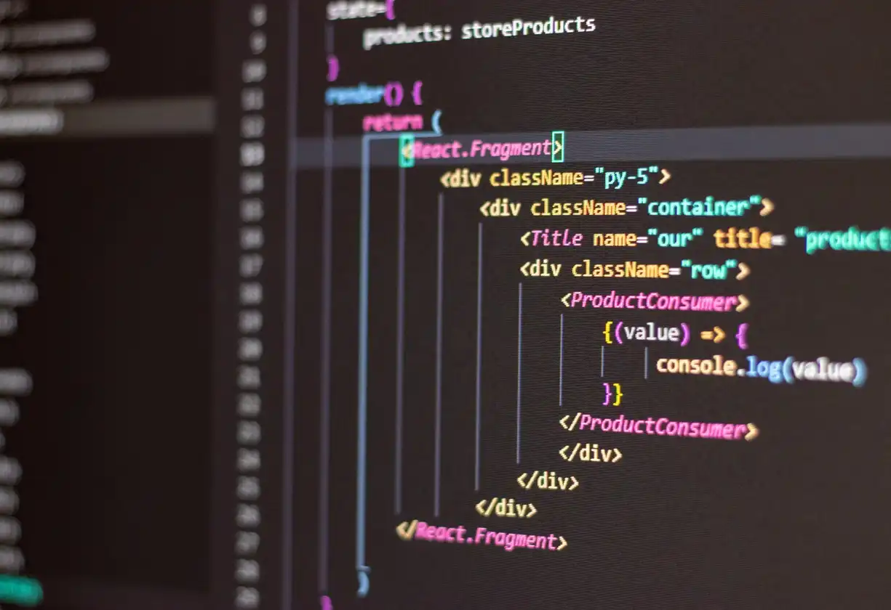
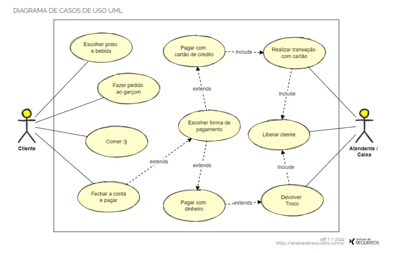

Disciplina 1: Programação de Soluções Computacionais Esta disciplina é o alicerce técnico do curso. Ela ensina como transformar problemas do mundo real em algoritmos lógicos. Os alunos aprendem a dominar linguagens de programação (como Python e Java) e conceitos fundamentais como: Estruturas de repetição e condicionais. Manipulação de vetores e matrizes. Lógica de programação aplicada ao desenvolvimento de softwares funcionais.

Disciplina 2: Modelagem de software Aqui, o foco sai da digitação do código e passa para o planejamento. Esta disciplina ensina a projetar sistemas complexos de forma organizada. Os principais tópicos incluem: Ciclo de vida de desenvolvimento de software. Modelagem de sistemas usando a linguagem UML (Diagramas de Classe, Casos de Uso). Garantia de qualidade e arquitetura de sistemas escaláveis.
